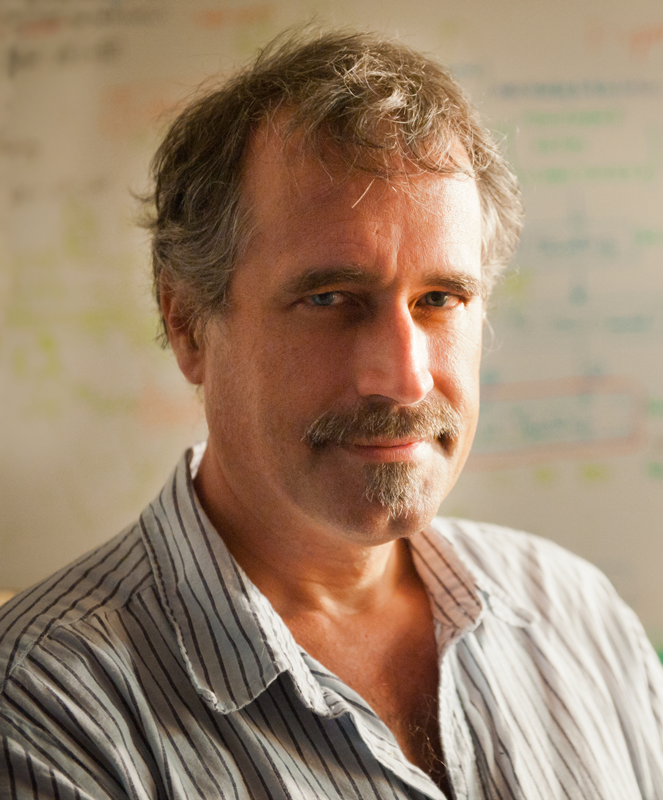

Program
June, 2019
Workshop program
Alan Bovik
The University of Texas at Austin
Al Bovik holds the Cockrell Family Endowed Regents Chair in Engineering at The University of Texas at Austin, where he is Director of the Laboratory for Image and Video Engineering (LIVE). He is a faculty member in the Department of Electrical and Computer Engineering and the Institute for Neuroscience. His research interests include image and video processing, digital television and digital cinema, computational vision, and visual perception. He has published more than 800 technical articles in these areas and holds several U.S. patents. His publications have been cited more than 75,000 times in the literature, his current H-index is above 100, and he is listed as a Highly-Cited Researcher by Thompson Reuters/Clarivate Analytics. His several books include the companion volumes The Essential Guides to Image and Video Processing (Academic Press, 2009).
Dr. Bovik has been named to be the recipient of the 2019 IEEE Fourier Award “For seminal contributions and high-impact innovations to the theory and application of perception-based image and video processing.” He was also the recipient of the 2017 Edwin H. Land Medal from The Optical Society and the Society for Imaging Science and Technology. He also received Television’s highest honor, a Primetime Emmy Award for Outstanding Achievement in Engineering Development from the Academy of Television Arts and Sciences (The Television Academy) in October 2015, for his work on the development of video quality prediction models which have become standard tools in broadcast and post-production houses throughout the television industry. He received the IEEE Third Millennium Medal in 2000. He has also received a number of major awards from the IEEE Signal Processing Society, including: Board of Governors, IEEE Signal Processing Society, 1996-1998; Editorial Board, The Proceedings of the IEEE, 1998-2004; and Series Editor for Image, Video, and Multimedia Processing, Morgan and Claypool Publishing Company, 2003-2015. His was also the General Chair of the 2014 Texas Wireless Symposium, held in Austin in November of 2014. He is a registered Professional Engineer in the State of Texas and is a frequent consultant to legal, industrial and academic institutions.
Lars Ericson
Intelligence Advanced Research Project Activity (IARPA)
Lars Ericson is currently a Program Manager at the Intelligence Advanced Research Project Activity (IARPA), within the Office of the Director of National Intelligence, with a focus on biometrics, computer vision, sensors, and nanotechnology. At IARPA, he is responsible for conceiving, initiating, and executing large research programs, prize challenges, and seedling projects. Dr. Ericson has over 15 years of research, development, test, and evaluation experience in the application of advanced technologies to help solve national security, defense, and criminal justice problems.
Prior to joining the US Federal Government, he was with SAIC where he supported IARPA as a subject matter expert in the field of biometrics. Previously, he was with ManTech International Corporation where he served as the Director of the National Institute of Justice Sensors, Surveillance, and Biometric Technologies Center of Excellence. In his early research career, he pursued basic and applied research in the field of nanotechnology, exploring novel materials and sensors at Rice University and the Naval Research Laboratory. Dr Ericson has a Bachelor’s degree in physics from Gustavus Adolphus College and a Doctoral degree in Applied Physics from Rice University.
Heesung Kwon
U.S. Army Research Laboratory (ARL)
Heesung Kwon is a Senior Researcher and the Image Analytics Team lead at the U.S. Army Research Laboratory (ARL). He received the B.Sc. degree in Electronic Engineering from Sogang University, Seoul, Korea, in 1984, and the MS and Ph.D. degrees in Electrical Engineering from the State University of New York at Buffalo in 1995 and 1999, respectively. From 1983 to 1993, he was with Samsung Electronics Corp., where he worked as a senior research engineer. He was with ARL, Adelphi, MD from 1996 to 2006 working on automatic target detection and hyperspectral signal processing applications. From 2006 to 2007, he was with Johns Hopkins University Applied Physics Laboratory (JHU/APL) working on biological standoff detection problems. Dr. Kwon rejoined ARL in August, 2007 as a team lead, and has been leading image/video analytics efforts pertaining to Un-manned Aerial Systems (UAS), human-autonomy interaction, hyperspectral signal processing, object detection/classification, action/activity recognition, semantic scene understanding, etc. primarily leveraging machine learning and deep learning based approaches.
Dr. Kwon will serve as one of government leads of a ARL sponsored multi-year research program, called Internet of Battlefield Things (IoBT). Dr. Kwon is currently an Associate Editor of IEEE Trans. on Aerospace and Electronic Systems. He also served as Lead Guest Editor of the Special Issue on Algorithms for Multispectral and Hyperspectral Image Analysis of the Journal of Electrical and Computer Engineering. He has published over 100 journal papers, book chapters, and conference papers on these topics. Dr. Kwon is a co-recipient of the best paper award at the Army Science Conference in 2004 and the best paper runner-up award at the IEEE International Conference on Biometrics: Theory, Applications, and Systems (BTAS 2016). He has been on Technical Program Committee for various conferences and workshops relevant to image/video analytics.
Manmohan Chandraker
NEC Labs America
Manmohan Chandraker is an Assistant Professor at the CSE department of the University of California, San Diego and is the Computer Vision Lead at NEC Labs America. He received a PhD from UCSD and was a postdoctoral scholar at UC Berkeley. His research interests are in computer vision, machine learning and graphics-based vision, with applications to autonomous driving and human-computer interfaces.
His works on 3D reconstruction have received the Marr Prize Honorable Mention for Best Paper at ICCV 2007, the 2009 CSE Dissertation Award for Best Thesis at UCSD, a PAMI special issue on best papers of CVPR 2011, the Best Paper Award at CVPR 2014, the 2018 NSF CAREER Award and the 2018 Google Daydream Research Award. He has served as an Area Chair at CVPR, ICCV, ICVGIP and AAAI, associate editor at JAIR, senior PC member at IJCAI and tutorials chair at 3DV.